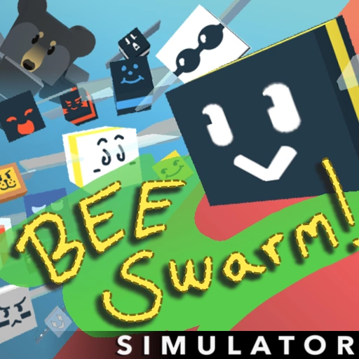

BEE SWARM WIKI
BEE SWARM SIMULATOR WIKI
fake wiki
START SEITE
🐝 Bees (Bienen)
Arten & Seltenheit: Von gewöhnlichen (Common) bis hin zu mystischen
(Mythic) Bienen.
Fähigkeiten: Erfahre mehr über Spezial-Fähigkeiten, Geschenke (Gifts)
und Mutationen.
Bienenstock-Aufbau: Tipps für die perfekte Team-Zusammenstellung.
⚙️ Mechanics (Spielmechaniken)
Honig & Pollen: Wie das Sammeln, Verarbeiten und Umwandeln von Pollen
funktioniert.
Felder & Monster: Informationen zu den verschiedenen Blumenfeldern und
Gegnern
(wie dem King Beetle oder Vicious Bee).
Quests: Alles über Missionen von Bären und zeitbegrenzte Events.Quests
Events: Alles über Missionen von Bären und zeitbegrenzte Events.
🎒 Items (Gegenstände)
Ausrüstung: Hüte, Sammler (Collectors), Rucksäcke und Gleiter.
Verbrauchsgüter: Wie man Gegenstände wie Gumdrops, Stingers oder
Extracts einsetzt und farmt.
Amulette & Abzeichen: Belohnungen für besondere Meilensteine im
Spiel.